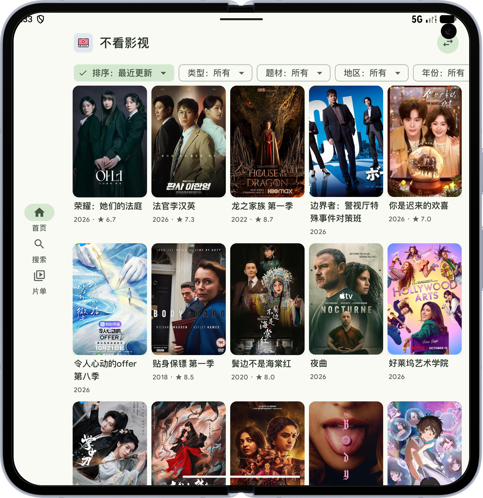
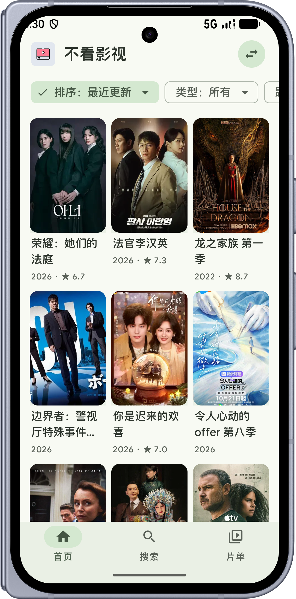
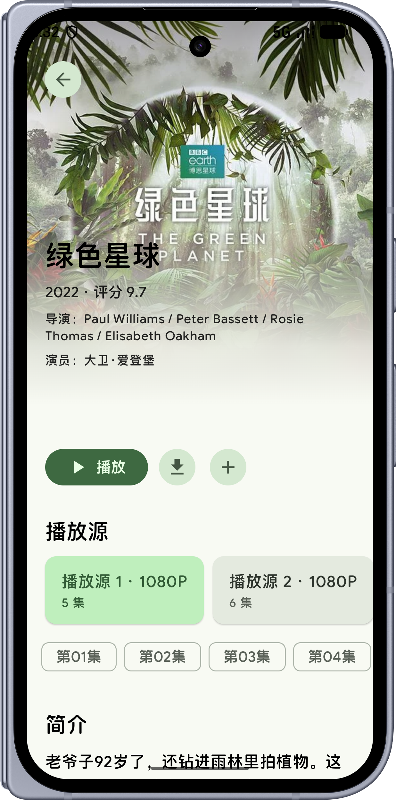
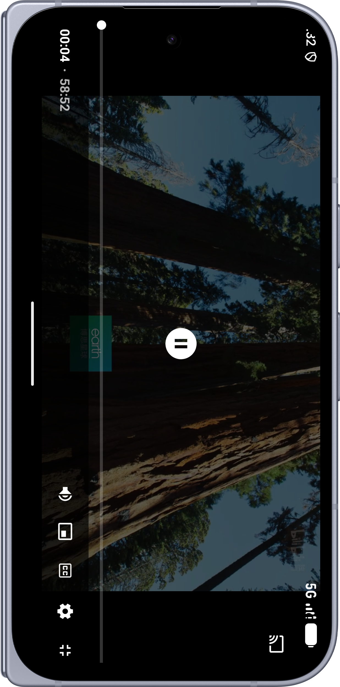

看得舒服
精致清爽的界面，让找片和观影都更轻松。
不看影视，把喜欢的内容放在眼前。无需登录，打开即用；从发现、观看到下载、投屏，每一步都简单顺手。

精致清爽的界面，让找片和观影都更轻松。
多样的影视内容，总能遇见想看的那一部。
无需登录，少一步等待，多一点随心。
离线收藏或切换到大屏，观影方式由你决定。
从发现内容到了解详情、开始播放，每一步都清晰顺手。



Android 版现已提供下载；Windows 和 macOS 版敬请期待。
适合 Android 手机与平板
下载 APK ↗在电脑上享受大屏观影
为 Mac 桌面准备
请只从你信任的来源获取安装包。